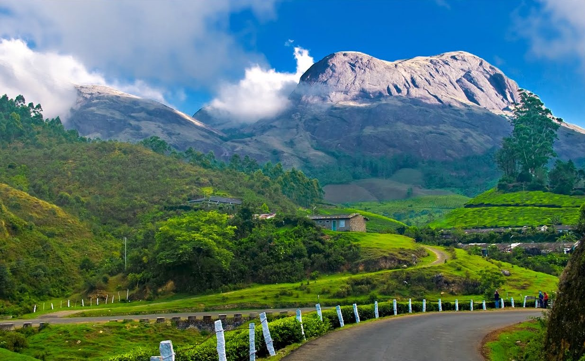
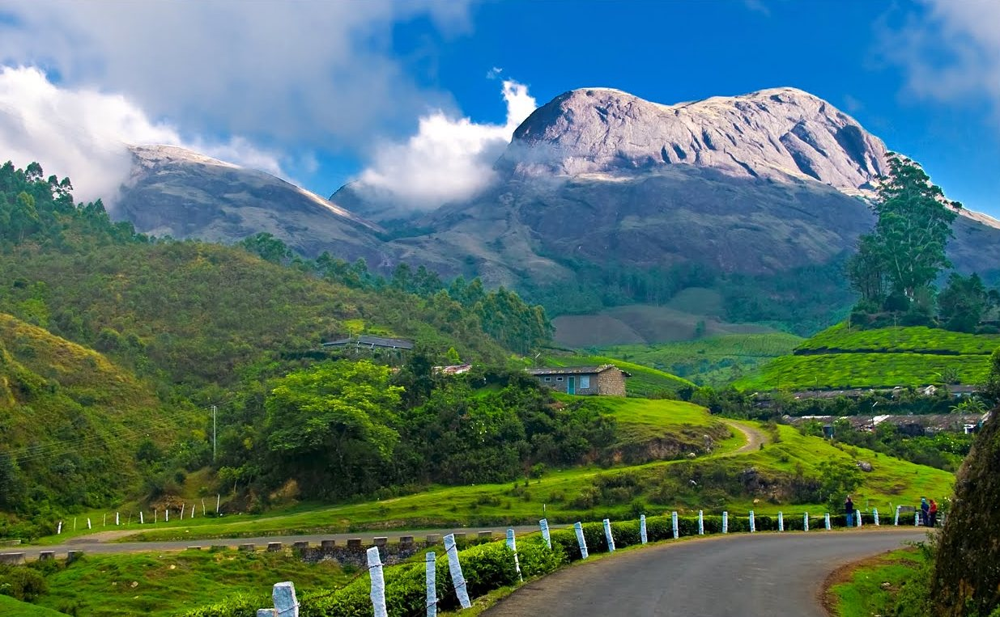
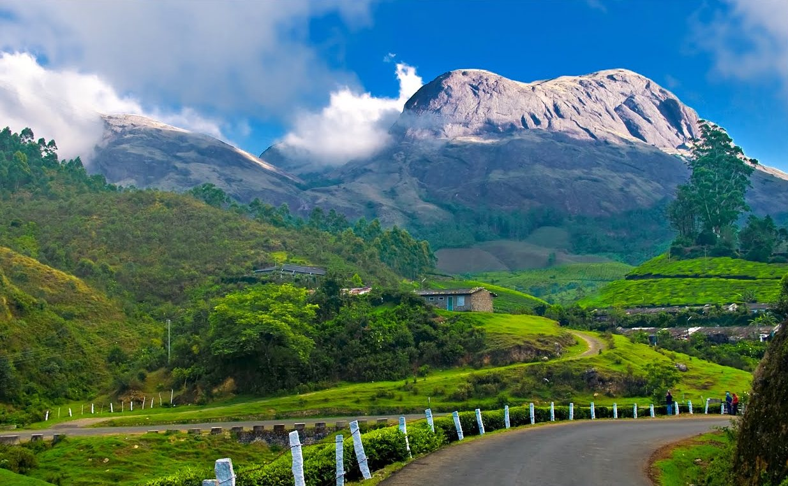
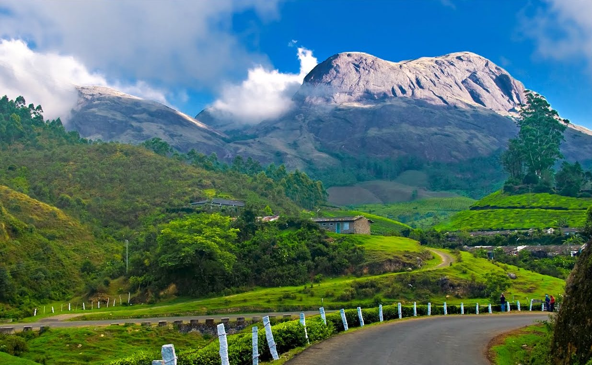

 

South India is the area including the five southern Indian states of Andhra Pradesh, Karnataka, Kerala, Tamil Nadu and Telangana, as well as the three union territories of Andaman and Nicobar islands, Lakshadweep and Puducherry, occupying 19% of India's area (635,780 km2 or 245,480 sq mi). Covering the southern part of the peninsular Deccan Plateau, South India is bounded by the Bay of Bengal in the east, the Arabian Sea in the west and the Indian Ocean in the south. The geography of the region is diverse with two mountain ranges–the Western and Eastern Ghats, bordering the plateau heartland. Godavari, Krishna, Kaveri, Tungabhadra, Periyar and Vaigai Palar rivers are important non-perennial sources of water. Bengaluru, Chennai, Hyderabad, Coimbatore, Kochi, Trivandrum, Visakhapatnam,Vellore, Tiruchirapalli, Madurai, Mysuru, Mangalore and Kozhikode are the largest urban areas.
The majority of the people in South India speak one of the five major Dravidian languages: Tamil, Telugu, Kannada, Odia and Malayalam. During its history, a number of dynastic kingdoms ruled over parts of South India whose invasions across southern and southeastern Asia impacted the history and culture in those regions. Major dynasties that were established in South India include the Cheras, Cholas, Pandyas, Pallavas, Satavahanas, Chalukyas, Rashtrakutas and Vijayanagara. Some Western European countries established ports in the region by military coercion in the 18th and 19th centuries.
Widely known for being the “Scotland of the South”, Coorg is an enchanting hill station located not so far from Bangalore. The view of the grey clouds subtly blending with the greenery of the hills is a sight worth seeing. Ever tried waterfall rappelling? If not, now is the time! An exciting challenge to overcome, with the water flowing down with force, in a moist climate, hear your heartbeat in your ears. Over the sound of the waterfall. There is no better place for this than Coorg, which easily makes it to the list of best places to visit in South India.
Coorg, officially known as Kodagu, is the most affluent hill station in Karnataka. It is well known for its breathtakingly exotic scenery and lush greenery. Forest covered hills, spice and coffee plantations only add to the landscape. Madikeri is the region's centre point with all transportation for getting around starting from here. On a visit to Coorg, cover the beautiful towns like Virajpet, Kushalnagar, Gonikoppal, Pollibetta, and Somwarpet, and experience the beautiful concept of "homestays" to make your experience more memorable!
Lose yourself in the mesmerising beauty of the rolling hills shrouded in the alluring mist and dense forest of Kodaikanal. Dubbed the Princess of Hill stations, Kodaikanal ranks high on the list of hill stations in the country thanks to the abundance of natural beauty, be it the waterfalls, the lakes, the lush greenery or the magnificent view of the Palani hills. Enjoy the eternally pleasant weather of the area as you trek to Green Valley View or Dolphin’s nose, where you can admire the scenic panoramas of this natural wonderland, or immerse yourself in the serenity of Kodai Lake or Berjarim Lake.
Located in the state of Tamil Nadu, Kodaikanal is one of the most famous honeymoon destinations in India. When you think of Kodaikanal, you think of a wonderful climate, cliffs covered in mist, cloud-capped mountains and beautiful lakes and valleys.
Home to the massive Periyar National Park, the quaint village of Thekkady is sure to capture your heart with its innocent charm and abundance of natural beauty. Spot tigers, as well as other wild animals frolic at the country’s largest tiger reserve, engage in the adventurous sport of Bamboo rafting or marvel at the wondrous ecology of the Periyar lake and its surrounding greenery.
A picturesque plateau nestled in the hills of the Western Ghats, Wayanad is one of the prettiest areas of the attractive state of Kerala. Part of the massive Nilgiris Biosphere Reserve, this charming town is loaded with enchanting waterfalls, historical caves, vast spice plantations and exotic wildlife, making it a must visit for anyone looking to explore the untouched beauty of the enchanted Western Ghats.
At the shoestring budget of a student, get the best snorkelling and scuba diving experience on these groups of islands that house large varieties of marine life that will brush by your ears while you stay amazed at how blue the water is. Experience the wonders of the aquatic world in their pristine form. If you thought the best beaches in India were in Goa, check Andaman and Nicobar out! You will be simply amazed to see the clear azure waters and the white sandy shores of the Andaman beaches. Snorkelling and scuba diving in this place would be an experience of a lifetime.
A small holy town situated on the Western Coast of India, Gokarna is known for it’s untouched beaches and is great for a relaxing holiday. A day or two of sunbathing on the beaches, flat on your stomach, sipping a cooler. If that is your idea of a vacation, or if what you simply need is a break from your hectic schedule of planned visits to sights in and around Karnataka, Gokarna is the place for you. A toned-down version of Goa, we suggest you take your beach hat, some sunscreen and a volleyball for a great time!
Known as the “Venice of the East”, Alleppey with its backwaters and floating houseboats, is one of the most beautiful places to visit in South India. The backwaters of Kerala are a breathtaking sight, particularly at the break of dawn. Surf on its gentle waters, or live in one of the houseboats. Or maybe just let the hammocks tied to the coconut trees cradle you to sleep. This is one of the most soothing places to visit in South India and a perfect way to round up your trip.
Hampi is one of those laid-back places with grandiose historical beauty that transports you back in time. A must visit place in South India, this places offer a wide range of activities as well. Once a part of the ancient south Indian kingdom of Vijayanagar, it’s a UNESCO World heritage site and also a very important historical and religious centre. The Virupaksha temple is an important temple which is visited by Hindus from all over the country. So jump over the ruins, take crazy pictures, read up on them or just feel the magnitude of the kingdom that once existed here. It’s truly magical.

A world away from where you are, Pondicherry welcomes you to a totally different atmosphere, with its colourfully painted houses in French architecture and relaxed attitude. Something that you breathe in and absorb. Also known as Puducherry, it makes for a great backpacking haunt. It is a popular tourist destination in South India owing to its colonial-era buildings, churches and temples, and of course, the famous beaches. It is also one of the few places to visit in South India which is preferred by mainstream and offbeat travellers alike.
A beautiful experience in itself, you taste the food even better when all your other senses are treated to the fresh sea wind and the sight of the never-ending ocean. A complete and ideal tourist destination in South India, Varkala is Famous for its springs, fisheries, lighthouses, beaches, lake and much more. An important Vishnu temple known as the Janardhanaswamy Temple is present here which is said to be more than 2000 years old. An ashram known as the Shivagiri Mutt, founded by the well known Hindu reformer Sree Narayana Guru, is also located close by.
Located in God’s own country – Kerala, Munnar is undoubtedly the most romantic hill station in South India. A great place to drive to, you know you’ve reached Munnar when you smell tea in the air. It’s literally everywhere, and you will go back smelling like a teabag. The entire area is a collection of small hillocks that are trek friendly, with lakes, and water falls and large expanses of dense, green forests maintained by the forest department. The green countryside is bound to take your breath away. Have a look at the sandalwood forest as well while you are touring this place in South India.
Goa is synonymous with Indian tourism thanks to its famous party scene and stunning architecture. If you’re tired of the beaches and the churches, Goa is also the site of some intense quad biking expeditions that explore the rugged terrain of the forest or the intense trek to the magical Dudhsagar falls for the offbeat traveller.
Goa is THE must visit tourist place in South India the go to when you want that perfect balance of fun, adventure and a relaxed environment. With numerous beaches and an inexhaustible number of restaurants serving the freshest and the yummiest of seafood, could your vacation GET any better? Also, there are plenty of places for shopping in Goa as well. Something’s always happening in Goa, regular gigs at the local pubs, food festivals, and the most awaited, Sunburn music festival. One Explore rocky terrains and get brushed on the cheek by leaves as you take the quad bike expedition along a route that runs 3 kilometres.
Located in the Shimoga district of Karnataka, are the Shimoga falls which are popularly known as the Jog falls and one of the best places to visit in South India. A favourite of people travelling to South India, the Jog waterfalls are the second highest plunge waterfalls of India. Majestic in appearance and a treat for the eye, there is a wide range of activities in and around the place that tourists can indulge in. During the monsoon season, the already bustling waterfall becomes even more alive, and the surrounding greenery only adds to the beauty and magnificence of these waterfalls. Rainbows are also a very common sight here during the monsoons.
Kerala’s favourite elephants greet you into this forest thickly populated by tropical flora and fauna. Many types of plants and animals can be found over here. Some of the rarest animal species include the great pied hornbill, Nilgiri Tahr and the Lion-tailed macaque. A little unknown and offbeat, Gavi offers a wide range of activities like trekking, camping, boating, safaris etc. One can also visit the spice gardens and factories nearby. It’s slowly emerging as a popular destination in South India for Ecotourism, owing to the untouched natural surroundings of this place.
A nice place to trek to, Siddara betta is a perfect Tourist place in South India go if you want to spend time with your friends and not have other people around. It is said that a lot of holy men regularly come here to meditate for long spans of time. I’d like to call it an introvert’s trekking choice. It’s also a popular religious site as well, and so many pilgrims pay a visit to this place every now and then. Natur lovers will love this place as the forests nearby are a great place to do some birdwatching. If you’re lucky, you might get a glimpse of the very rare Yellow Throated Bulbul.Karnataka (Karnāṭaka) is a state in the south western region of India. It was formed on 1 November 1956, with the passage of the States Reorganisation Act. Originally known as the State of Mysore, it was renamed Karnataka in 1973. The state corresponds to the Carnatic region. The capital and largest city is Bangalore.
The Nilgiri Hills are separated from the Karnataka Plateau to the north by the Noyar River.Three national parks border portions of the Nilgirimountains.Fitness junkies will get a real kick out of cycling through the mystical and vast Nilgiris mountains. Literally meaning blue mountains, the Nilgiris is a hotbed for remarkable vegetation, exotic wildlife, and indigenous tribes of South India. Cycling tours are organised through the massive Nilgiris Biosphere Reserve, allowing you to cover incredible locations like the Bandipur, Wayanad, and Mudumalai.The Nilgiri Mountains form part of the Western Ghats in western Tamil Nadu of Southern India. At least 24 of the Nilgiri Mountains' peaks are above 2,000 metres (6,600 ft), the highest peak being Doddabetta, at 2,637 metres (8,652 ft).